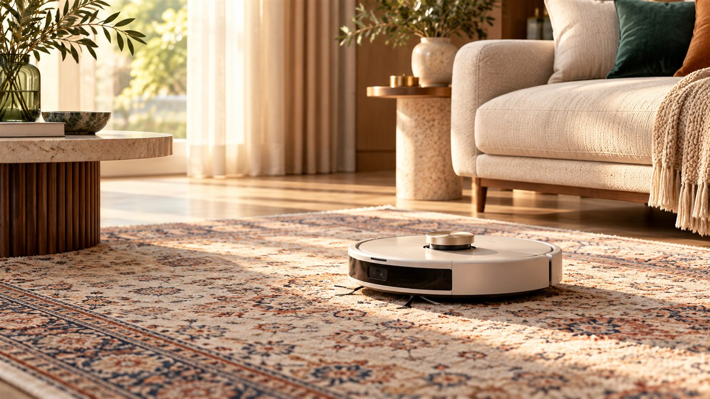
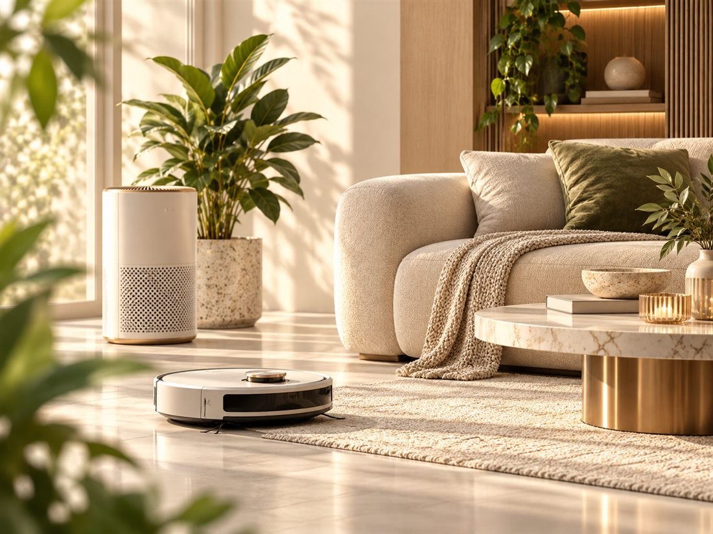

راهنمای مستقل انتخاب و مقایسه
قبل از خرید، بهتر بسنج
سنجو کمک میکند گزینهها را سریعتر پیدا کنی، تفاوتهای مهم را ببینی و انتخاب مطمئنتری داشته باشی
ضدآفتاب پوست چربسشوار خانگیجارو رباتیکساعت هوشمند
دستههای اصلی
از کجا شروع کنیم؟
سه مسیر اصلی برای شروع سریعتر و رسیدن به انتخاب مناسبتر

زیبایی و مراقبت شخصی
پوست، مو و ابزارهای مراقبت روزمره با تمرکز روی انتخاب کاربردی و ارزش خرید
مشاهده راهنماها ←
تکنولوژی مصرفی
گجتها و ابزارهای دیجیتال برای استفاده روزمره، ساده و قابل مقایسه
مشاهده راهنماها ←
خانه و زندگی
لوازم خانه، نظافت و محصولات کاربردی برای زندگی راحتتر
مشاهده راهنماها ←راهنماهای منتخب
راهنماهای منتخب برای انتخاب بهتر
راهنماهای کاربردی برای مقایسه گزینهها و رسیدن به انتخاب مناسبتر

مقایسه و خرید
تفاوت مهم را ببین؛ بعد انتخاب کن
بهجای برنده مطلق، تفاوت کاربرد را ببین
مقایسههای سنجو
سه مقایسه جدید
چندفروشگاهی
یک محصول، چند مسیر خرید
پس از فعالشدن همکاری فروش، گزینههای خرید واجد شرایط از چند فروشگاه نمایش داده میشوند
۱
نیازت را مشخص کن
بودجه، کاربرد و اولویت واقعی را روشن کن
۲
تفاوتهای واقعی را ببین
فقط نکات اثرگذار مقایسه میشوند
۳
آگاهانه انتخاب کن
مسیر خرید مناسبتر روشن میشود